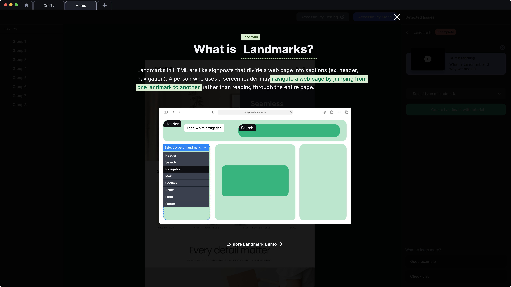
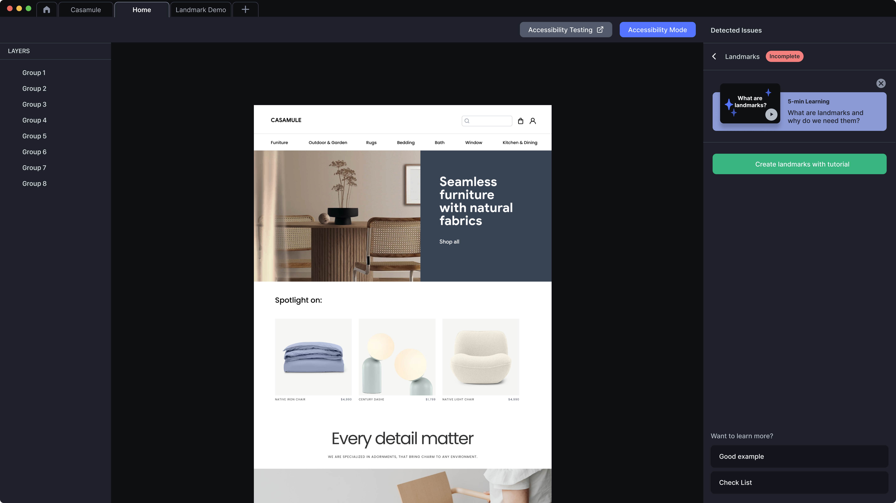
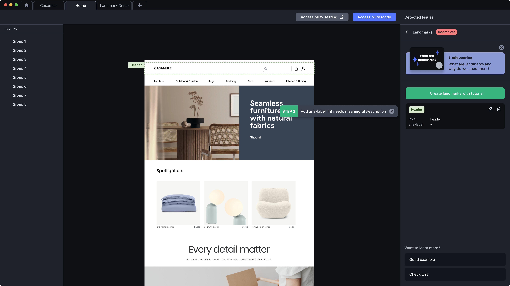

Problem
Sighted users see headers, sidebars, and footers as visual regions. Screen-reader users navigate by landmark roles or by sequential reading. Without semantic landmarks, every page begins at the global navigation and the user has to traverse it again before reaching the page content.
Generic <div>-soup markup is the most common cause: visually distinct regions exist on screen, but the assistive-tech tree has no roles to jump between.
Pattern
- Annotate every region with its landmark role:
header(banner),nav(navigation),main,aside(complementary),footer(contentinfo). Use the HTML element where it exists; only fall back torole="..."on a<div>when the element isn’t available (e.g. nested<header>at section level still becomes a banner role only when at the top level). - One
<main>per page. Multiple mains break the bypass pattern. - Label when multiple of the same type.
<nav aria-label="Site navigation">vs<nav aria-label="Section navigation">. The label is announced by AT. - Heading hierarchy is unbroken. H1 → H2 → H3 with no skipped levels. The H1 is the page title; landmarks structure the page; headings structure the content within landmarks.
- Skip-to-content link. Lands focus on
<main>(which carriestabindex="-1"). Coordinated with the focus-order pattern.
Visual examples



Code
<a class="skip-link" href="#main">Skip to main content</a>
<header> <!-- banner role, top-level only -->
<nav aria-label="Site navigation">
<!-- primary nav -->
</nav>
</header>
<main id="main" tabindex="-1">
<h1>Page title</h1>
<nav aria-label="Section navigation">
<!-- in-page navigation; labeled to disambiguate from site nav -->
</nav>
<article>
<h2>Article heading</h2>
<!-- content -->
</article>
<aside aria-label="Related"> <!-- complementary role -->
<!-- supporting content -->
</aside>
</main>
<footer> <!-- contentinfo role, top-level only -->
<!-- site-wide footer -->
</footer>Annotation
On the design, color-code each region by landmark role (banner / navigation / main / complementary / contentinfo). Where multiple regions share a role, name the label that disambiguates them. Record the heading hierarchy alongside.
Banner → header
Navigation → nav, aria-label="Site navigation"
Main → main (id="main")
Section nav → nav, aria-label="Section navigation"
Article → article (h2 = "Article heading")
Complementary → aside, aria-label="Related"
Contentinfo → footer
Heading order: h1, h2, h2, h3; no skipsWCAG mapping
- 1.3.1 Info and Relationships (opens in new tab) A structure conveyed in presentation is also programmatic
- 2.4.1 Bypass Blocks (opens in new tab) A mechanism to skip repeated blocks
- 2.4.6 Headings and Labels (opens in new tab) AA descriptive headings and labels
Related patterns
- Focus order & keyboard navigation (#06), the skip-link lands focus on the
<main>landmark - Alt text annotation (#08), image semantics within the content landmarks